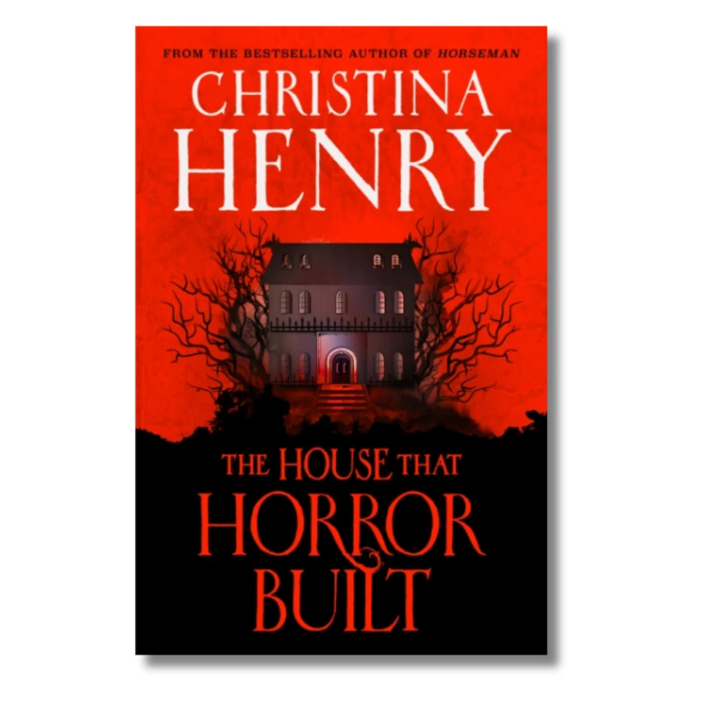

01 / THE NOVEL
A House Full of Secrets
The House That Horror Built is a horror novel written by Christina Henry. It combines mystery, suspense, a disturbing atmosphere, and complicated family relationships.
The story follows Harry Adams, a single mother who takes a cleaning job at Bright Horses, the Chicago mansion of Javier Castillo, a famous horror-film director.
As Harry works in the mansion, strange sounds and unexplained events make her question what is really happening behind its closed doors. What begins as an ordinary job gradually becomes a frightening mystery.
A mysterious mansion, a locked door, and secrets that refuse to remain hidden.
THE CENTRAL MYSTERY02 / THE WRITER
Meet Christina Henry
Christina Henry is an American author known for writing horror and dark fantasy. Her stories often explore frightening situations, mysterious worlds, and the darker sides of human behaviour.
She has written several novels, including Near the Bone, Horseman, and Good Girls Don't Die.
In The House That Horror Built, Henry uses the setting of a horror-film director's mansion to develop a story involving secrets, suspense, and family struggles.
Horror is not always about what we see. Sometimes, it is about what we suspect but cannot explain.
OUR INTERPRETATION OF THE NOVEL'S ATMOSPHERE — NOT AN AUTHOR QUOTE